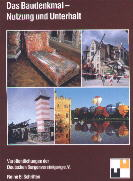

Altbau
und Denkmalpflege Informationen auf CD
Neu:
Kostengünstig Instandsetzen - Ein kleiner Ratgeber zu Kauf, Finanzierung, Planung (PDF eBook, 29 S.)
Altbauten kostengünstig sanieren - mit vielen Tipps & Tricks gegen Sanierpfusch, 2. wesentlich erweiterte und verbesserte Auflage (PDF eBook und Druckversion)
Preisgünstige E-Books zu den Dauerbrennern Baufeuchte, Schimmel und Dachausbau vom Praktiker Dipl.-Ing. Peter Rauch
Mila Schrader, Julia Voigt: Adressleitfaden und Ratgeber für Altbausanierung
und exklusives Bauen, Bauforscher, Planer, Handwerker und Spezialisten,
ökologische und historische Baustoffe, Denkmalpflege, EDITION:anderweit, Suderburg 2004, ISBN 3-931824-32-2
Fehlt Ihnen eine gußeiserne Zaunspitze für die Umfriedung Ihres Schloßparks? Ist
das Ecklager des alten Fensterbeschlags gebrochen oder die wunderschöne Messing-Guß-Armatur
Ihres historischen Gußheizkörpers und keiner weiß, wo
es dafür replizierten Ersatz gibt? Suchen Sie eine Gemeinschaft von
Gleichgesinnten mit kompetenten Ansprechpartnern, einen Reetdachdecker,
einen Standöllieferanten oder gar einen preiswerten Bauforscher? Wo
finden Sie das, wen fragen Sie? Weiter von Pontius zu Pilatus und niemand,
nicht mal Google weiß Bescheid - weil der Altbauspezi eben webresistent
ist und bleibt? Hier kommt endlich die richtige Lösung.
Nur Mila Schrader und ihrem baurat.de-Team
konnte es gelingen, aus über 10jähriger Sammelleidenschaft einen
"Michelin" durch die bisher sehr unübersichtliche Landschaft der Altbau-
und Denkmalpflegepraxis herauszugeben. Zwar ohne Sternewertung, dafür
aber von A bis Z, nach Postleitzahl und mit der sinnigen Empfehlung zum
Do-it-yourself: "Fragen Sie vor Auftragserteilung immer nach Referenzen
und schauen Sie sich sanierte Objekte an" (S. 130). Dieser Umweg lohnt
sich ganz gewiß. Super die durchgängig reiche Bebilderung, meist
themenbezogen in den durchrubrizierten Adreßregistern von "1. Bauforschung
und Bauplanung" über "2. Baustelle, Werkstatt, Baustoffe" und "3.
Bauhandwerker" bis zu "4. Ansprechpartner und Spezialisten". Insgesamt
504 Seiten gebündelte und auch dank Indizierung leicht auffindbare
2000 Expertenadressen inkl. Telefon, www und Spezialisierungsbereich in
Schlagworten. Das ganze jedoch kein trockenes "Telefonverzeichnis", sondern
dank spritzig geschriebener Themeneinführungen und der über 600
Farbbilder beispielsweise von Schäden vor (und nach) Sanierung
und zum schraderschen Subtext "freistehende Badewannen in jeder Lage" auch
ein Genuß für Auge und Geist. Besonders anschaulich die vielen
superperfekt anmutenden denkmalähnlichen Neubauten über altem
Kern bis zum "Zustand der Fouqé Bibliothek in Brandenburg a.d.H.
vor und nach der Restaurierung", bei dem ein erklecklicher Teil der schönen
historischen Fenster die Aufhübscherei der Denkmalpflege (des firmenberatenen
Architekturgestalters?) nicht überlebte, sondern gegen noch tolleres
(?) Neues ersetzt wurde (S. 112).
Nicht jeder der hier verzeichneten "Denkmalpflege"-Adressaten liefert also wirklich Denkmalpflege. Doch
das haben wir schon vorher gewußt.
Fazit: Dieser Adreßleitfaden liefert wie alle Schraderbücher neue, bisher dringend
vermißte Zugänge zum Altbau, zu seinen speziellen Details und auch zu seinen
Liebhabern aller (!) Couleur. Ein Muß in die Hand der Altbaubesitzer,
Denkmalpfleger, Planer und Handwerker. Liebevollst aufgemacht, in praktisch
taschengängigem "Michelinformat" und mit ständigem Adreßupdate auf www.baurat.de.
Mila Schrader, Julia Voigt: Bauhistorisches Lexikon: Baustoffe, Bauweisen, Architekturdetails
EDITION:anderweit, Suderburg 2003
Wie heißen sie nun, die historischen Baudeteails - und vor allem: Welche gibt es? In den ca. 3.800 Stichworten
des opulenten Nachschlagewerks geben die altbauerfahrenen und stilkundigen Verfasserinnen Auskunft zur Nomenklatur,
Bedeutung und konstruktiven Ausformung all dessen, was unsere geliebten Altbauten und Baudenkmale von dem
üblicherweise gesichtslosen / geschichtslosen Neubaushit unterscheidet. Ein Buch für alle, nicht nur den
Architekturhistoriker!
Neu - 2.verbesserte Auflage!!!: Martin/Krautzberger,
Deutsche Stiftung Denkmalschutz (Hrsg.): Handbuch Denkmalschutz und
Denkmalpflege - einschließlich Archäologie -, Recht - fachliche
Grundsätze - Verfahren - Finanzierung, Verlag
C. H. Beck, München 2004, ISBN 3 406 51778 1
Wie funktioniert Denkmalpflege? Auf diese Frage läßt sich das dicke "Handbuch
Denkmalschutz" zusammenfassen, hierzu bietet es Lösungsansätze. Auf 672 Seiten
behandeln die 27 (!) Autoren aus Denkmalbehörden, Universitäten,
kirchlichen, kommunalen und staatlichen Bauämtern, aus Rechtsanwalts-
und Steuerberaterkanzlei sowie Architekturbüro die wesentlichen Probleme,
die sich dem Bauherrn, dem Planer und Restaurator, dem Finanzberater und
der staatlichen Denkmalpflege rund ums Denkmal stellen. Das synoptisch dargestellte Denkmalrecht von Bund und Ländern
verknüpfen die Herausgeber dazu mit den aktuellen denkmalpflegerischen und archäologischen Grundsätzen.
Die Verfasser von der Denkmalfront sparen dabei kritische, ja bissige Anmerkungen zu den Fehlerquellen, die den Erfolg denkmalschützerischer Bemühungen seit jeher untergraben, nicht aus. So hinterfragt Prof. Dr. Ursula Schädler-Saub in "Konservierung, Restaurierung, Instandsetzung", S. 212 ff. die verfügbaren "handwerklichen und technischen Qualitäten" sowie die Planungshoheit bei Substanzeingriffen und fordert ein "gut funktionierendes Team aus Denkmalpflegern und Restauratoren, Historikern, Handwerkern und Künstlern", um die altbekannten Schäden durch "Denkmalpflege", vor allem auch "Restaurierung" wenigstens künftig zu vermeiden. Daß dies im bunten Alltag zwischen Handwerkswut und Planungsstolz nur schwer eingelöst wird, bemerkt Prof. Dr. Gert Th. Mader in "Organisation und Ablauf einer Maßnahme - Planung" S. 283 ff. im Zusammenhang mit den Umnutzungen "großer Schrannen zu Veranstaltungssälen, wodurch diese Denkmäler völlig verfremdet und beträchtlich zerstört wurden", oder wenn "Zerstörungen durch Elektro- oder Rohrleitungen größer sein können als die durch neue Einbauten von Wänden." Aber auch "modische Einbauten wie Wendeltreppen in Balkendecken" bringen "ohne Not durch Auswechslungen Schwachstellen in eine gealterte Konstruktion", entlarven "Denkmalschutz und Denkmalpflege" als wohlfeile Tarnbegriffe für Denkmalmord. Hier muß der Denkmalbesitzer also ansetzen, wenn er günstig und langlebig instandsetzen will. Sein altes Haus ist in aller Regel energietechnisch vorteilhaft konstruiert und könnte diesbezüglich in Ruhe gelassen werden. Normgemäße Energiesparzutaten aus bauphysikalischem Unverstand wie Dämm- und Dichtkonstruktionen können weder Energie noch Kosten sparen, aber das Bauwerk und dessen Nutzer nachhaltig schädigen. Folglich fordert Dipl.-Ing. Konrad Fischer, Mitglied des Beirats für Denkmalerhaltung (nicht des Wissenschaftlichen Beirats!) der Deutschen Burgenvereinigung e.V., in "Energiesparen und Wärmeschutz am Baudenkmal" S. 388 ff., regen Gebrauch der denkmalbezogenen Ausnahmen und Befreiungen von der EnergieEinsparVerordnung EnEV.
Zum Gebrauchswert dieses Handbuchs: Seine praktikablen Ratschläge zum Planen, Finanzieren und Bauen, seine verständlichen Erläuterungen der Grundbegriffe, seine reichen Literaturhinweise und der ausgereifte Schlagwortkatalog machen es zu einem guten Arbeitswerkzeug für bessere Denkmalpflege. Daß diese nicht nur an den allseits anerkannten "hochrangigen" Baudenkmalen Not tut, sondern auch an den aufgegebenen Hinterlassenschaften der industriellen Kultur, zeigt Axel Föhl in "Denkmäler der Technikgeschichte" S. 138 ff.: Die "Auffassung, es müsse sich bei einem Baudenkmal unbedingt um ein künstlerisch hochwertiges Objekt handeln" ist zumindest in der Fachwelt "überwunden". Den Herausgebern um Dr. Dieter Martin, Dozent für Management und Recht der Denkmalpflege an der Uni Bamberg, der auch die meisten Beiträge liefert, ist ein großes Werk gelungen. Es wird in der Zeit ruinierter Denkmalpflegekassen seine Bedeutung noch oft genug beweisen können.
Deutsches Nationalkomitee für Denkmalschutz DNfD
(Hrsg.): Energieeinsparung
bei Baudenkmälern, Dokumentation der Tagung des DNfD
am 19.3.02 in Bonn, Band 67 der Schriftenreihe des DNfD, ISSN 0723-5747, kostenlos
erhältlich bei: Geschäftsstelle
des Deutschen Nationalkomitees für Denkmalschutz, beim Beauftragten
der Bundesregierung für Angelegenheiten der Kultur und der Medien, Graurheindorfer Str. 198, 53117 Bonn
Von vielen Seiten wird das Thema in dieser reich bebilderten und schön ausgestatteten Vortragssammlung
beleuchtet. Ergebnis: (nicht nur) Baudenkmäler brauchen wegen ihrer
ohnehin vorhandenen energiesparenden Massivbauweise keine
Zusatzdämmung oder -lüftung - ganz im Gegenteil: sie und ihre Bewohner
werden dadurch ergeblich gefährdet. Unendliche Schadensfälle in dichten Dämmbuden
beweisen: Die Bausubstanz verrottet, die Wohnungen werden zu Schimmelbrutstätten,
die Bewohner verrecken im eigenen Mief und der Gipfel: Energie wird keine gespart, da
viele Dämmstoffe gar nicht richtig dämmen. Die Denkmalpflege
bläst hier endlich zum Sturm gegen die Interessensvertreter, die unseren Gesetzgeber in
Gefangenschaft genommen haben. Vorwort vom grünen NRW-Bauminister Dr. Vesper (hat
Tagung nach Begrüßung verlassen) inkl. CO2-Lüge und Leichtbauweise-Werbung!
Und noch eins drauf:
Verband
der Bausachverständigen Deutschlands e.V. (Hrsg): VBN-Info
Sonderheft WärmeEnergie 2003, Dämmen wir uns krank? Pro und Kontra
Wärmeschutz und Energieeinsparung, Fachaufsätze von Bausachverständigen,
Architekten, Physikern und Juristen, durchgehend farbig illustriert, Literaturrecherche
u.v.m., Bremerhaven 2003.
Der ultimative EnEV-Hammer. Bauschäden en masse, vergebliche Einsparversuche, pseudowissenschftliches
Bemühen, aus Schwarz dann dennoch Weiß zu machen - alles ist da drin. Die
kontrahierenden Protagonisten wie Meier und Gertis und das Fußvolk
wie Fischer u.v.a. kloppen sich um die Argumente rund um das Lichtenfelser
Experiment. Erheblich mit Beiträgen ergänzt
gegenüber der zugrundeliegenden sensationellen VBN-Tagung
12/02 in Hannover. Spannend, kontravers, deftig und formelgestützt
zum Nachrechnen. Nun kann sich aber wirklich jeder seine eigene Meinung
schnitzen. Und das Beste: Die originale
Gertisgrafik zur Ergänzung des Lichtenfelser Experiments der
Tagungsunterlagen wurde in der Druckversion in ihr krasses
Gegenteil verkehrt. Wat stimmt nu? Und wer vergackeiert denn nun wen?
Haben doch die etablierten Baupfuisicker im Web schon allerlei unternommen,
um Gertis-Schwarz mit Gertis-Weiß zu versöhnen. Grau ist eben alle Theorie.

Konrad Fischer (Hrsg.)
Neu: Edmund Bromm: Gesund wohnen in Altbauten – Mit alten und kranken Häusern richtig umgehen
– Ein praktischer Ratgeber für Laien und Profis,
210 Seiten, 26 farbige Abbildungen, mehrere Tabellen, pro literatur Verlag, 2007, ISBN 978-3-866-11 320-6
Ein Erfahrungsbericht aus der Praxis der Firma
Isar Bautenschutz mit einem Vorwort von Professor Dr. Folker H. Wittmann. Hier packt der Baupraktiker und
Mitgründert des WTA e.V. aus seinem Nähkästchen aus. Schwerpunkt: Ursachenforschung und Beseitigung von
Bauschäden rund um die Mauerwerksentfeuchtung, Schimmel und Fogging. Die dezidierte Warnung vor falschen
Saniermaßnahmen wird nicht ausgespart. Nicht immer konform mit der Lehrmeinung,
bestimmt auch nicht immer mit der des Rezensenten. Eben eine sehr persönliche Schau auf das Saniergeschehen und
geprägt von den leidensgestützten Erfahrungen des Autors als Inhaber eines langjährig am Saniermarkt erfolgreichen Unternehmens.
Als feuchtegeplagter Hausbesitzer, aber auch als Sanierungsprofi sollte man sich dieses Buch gewiß nicht entgehen
lassen. Bestellung beim Autor
Rolf Köneke + : Bauschäden
am Haus - Gesunde, werterhaltende Instandsetzung vom Keller bis zum Dach, Fachverlag
Köneke, Hamburg 2002, ISBN 3-923605-13-7, 211 S.
Klare Info für den Bauherrn. Wer nach diesem Buch
noch sinnlos dämmt und dichtet, ist selber Schuld. Wie man Schimmel
wirkungsvoll bekämpft oder noch besser von vornherein vermeidet, wie
man bauliche Probleme lösen kann - das findet man in diesem neuen "Köneke".
Rolf Köneke +: Schimmelpilze und Feuchte in Gebäuden, Fogging - Schwarzwerden von Wänden in Wohnungen, Wohngifte -
Ursachen und gesundheitliche Risiken, Bauphysikalische Einflüsse, Mietrechtliche
Konsequenzen, Falsche mykologische Interpretationen, 3.
überarbeitete und erweiterte Auflage 2001, Hammonia, Hamburg 2001, ISBN 3-87292-114-2
Das ganze Spektrum verseuchter Wohnungen nimmt dieser
Klassiker aufs Korn. Die hier angesammelten Informationen, kurz und
bündig dargestellt und allgemein verständlich, dienen seit jeher den
Schimmelgeplagten, Baupraktikern, Wohnungswirtschaftlern und Sachverständigen,
Licht ins Dunkel falscher Bauweisen zu bringen. In mietrechtlichen Auseinandersetzungen,
bei der Beurteilung von Sanierungsvorschlägen, beim Planen und Bauen
liefert Köneke unersetzliche Informationen. Wichtig: Nicht Dämmstoffverpackung,
sondern ausreichende Lüftung ist wichtig, um die in ca. 50 %
des deutschen Wohnbestands anzutreffende Schimmelseuche zu bekämpfen. Auch
wenn Schlaumeier etwas anderes versprechen.
Rolf
Köneke + u.a.: Unser Haus gesund instandsetzen, Fachverlag Köneke, Hamburg 2000, ISBN
3-922299-39-3, ca. 100 S.
Feuchte, Schimmel und Wärmedämmung - die idealen
Partner zur Vernichtung der Baukonstruktion und des Wohnklimas. Der Fachautor
nimmt diese Problempunkte aufs Korn und sagt, worauf es ankommt. Mögen
auch nicht alle Tipps zum Einsatz von bauchemischen Sanierbaustoffen das
Gelbe vom Ei sein - die Linie stimmt. Und: Die Beiträge von Prof.
Dr.-Ing. habil. Claus Meier (Gesund wohnen - was sagt die Bauphysik?),
von Dr. Helmut Böttiger (Die Wahrheit über Energie - und Energie-Einsparungen,
die offenbar keiner erfahren soll), von Dipl.-Met.
Dr. Wolfgang Thüne ("Klimaschutz" ist und bleibt ein
utopischer Wunschtraum, denn erst ändert sich das Wetter und dann gleitet
das "Klima" hinterher!) bereiten das Thema auf und argumentieren gegen das
mit DIN, WSVO und EnEV verordnete "Tun" an unseren Häusern und ihren Bewohnern.
Vernichtend die Stellungnahme des Bau-Fachredakteurs eines "Ökologischen" Verlages und Redakteur einer "Ökologischen" Haus-Zeitschrift an Rolf Köneke + (Originalzuschrift liegt vor):
Sicher haben Sie recht, wenn Sie auf die häufig nicht erkannte Notwendigkeit ausreichender Lüftung zur Vermeidung von Schimmel hinweisen. Diese Lüftung aber durch den Ausbau von Lippendichtungen in Fenstern und bewußt undichte Konstruktionen zu erreichen, ist schlichtweg abenteuerlich und wird zwangsläufig Bauschäden nach sich ziehen.
Ihr Don-Quichotte-Kampf gegen die Wärmedämmung zeigt sein wahres Gesicht, wenn Klimaschäden und mangelnde Energiereserven schlicht geleugnet und die Atomkraft als universales Allheilmittel propagiert werden. Bitte verschonen Sie uns künftig mit diesem Unsinn. Mit freundlichen Grüßen XY"
Familienheim und Garten: Interview mit Rolf Köneke +: Gesundes Wohnen
Udo
Mainzer (Hrsg.): Politik und Denkmalpflege in Deutschland
Manfred Steinröx (Hrsg.): Finanzierungsstrategien
für Kultureinrichtungen in Deutschland
Petzet/Mader:
Praktische Denkmalpflege
G.
Eckstein: Empfehlungen
für Baudokumentationen
Verein
Denkmalpflege in Oberösterreich (Hrsg.): Denkmalpflege in Oberösterreich mit Jahresbericht
Leckerbissen
für den Fensterfreund
Claus
Meier: Richtig
bauen. Bauphysik im Widerstreit – Probleme und Lösungen + Mythos Bauphysik
Südtiroler Burgeninstitut
(Hrsg.): Burg Runkelstein - Castel Roncolo, Erhalten und Gestalten von
Burgen und Schlössern
Francesco
Carotta: War Jesus Caesar? 2000 Jahre Anbetung einer Kopie
Wilhelm
Kammeier: Die Fälschung der Geschichte des Urchristentums
Paul van Buitenen: Unbestechlich für
Europa, Ein EU-Beamter kämpft gegen Misswirtschaft und Korruption
Hans
Jürgen Syberberg: Vom
Unglück und Glück der Kunst in Deutschland nach dem letzten Kriege
U.
Topper: Die >Große Aktion<
- Europas erfundene Geschichte
Die
Offenbarung Johannis - Eine astronomisch-historische Untersuchung von Nikolaus Morosow
Michael
Crichton: Welt in Angst
Ogereg Lerlow (Norbert Staude,
Hrsg): 2048
Ulrich Berner, Hansjörg
Streif (Hrsg): Klimafakten
Thomas Gold: Biosphäre der heißen Tiefe
D. Maxeiner/M. Miersch: Lexikon der
Ökoirrtümer
H.-P. Beck-Bornholdt/H.-H. Dubben:
Der Hund, der Eier legt - Erkennen von Fehlinformationen durch Querdenken
W.
Thüne: Freispruch für CO2!
Wie ein Molekül die Phantasien von Experten gleichschaltet
F.
William Engdahl: Mit der Ölwaffe
zur Weltmacht - Der Weg zur neuen Weltordnung
Petzet/Mader:
Praktische Denkmalpflege - Rezension in ARX und BURGEN UND SCHLÖSSER